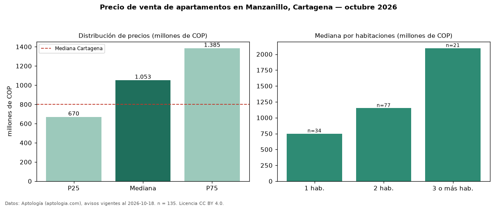

Precio de venta de apartamentos en Manzanillo, Cartagena — octubre 2026
COP 1,05 mil millones es el precio mediano de apartamentos en venta en Manzanillo, Cartagena (n = 135 avisos). Frente a la mediana de Cartagena para apartamentos (COP 800 millones), queda 32 % por encima. Por metro cuadrado, la mediana es COP 11,98 millones/m² (n = 124 avisos con área), 52 % por encima de Cartagena (COP 7,86 millones/m²). Con el precio por m² de arriendo del mismo segmento (COP 43.923/m² al mes), la rentabilidad bruta implícita es 4,4 % anual (aproximación con medianas de ofertas distintas). El área mediana anunciada es 82 m². El segmento con más oferta es el de 2 habitaciones (77 avisos, mediana COP 1,15 mil millones); pasar de 1 habitación a 3 o más habitaciones cambia la mediana +179 %. La administración mediana declarada es COP 933.000 al mes (n = 99). La mitad central de los avisos va de COP 670 millones a COP 1,39 mil millones (razón 2,1), una dispersión alta. Datos: Aptología (aptologia.com), CC BY 4.0 — https://www.aptologia.com/venta/cartagena/manzanillo. Archivos: PDF, CSV con las cifras y gráfica PNG.

| Avisos únicos | 135 |
|---|---|
| Percentil 25 | COP 670.000.000 |
| Mediana | COP 1.052.900.000 |
| Percentil 75 | COP 1.385.000.000 |
| Mediana por m² | COP 11.976.744 |
Fuente: avisos vigentes de portales inmobiliarios recopilados por Aptología, deduplicados (mínimo 30 avisos únicos por celda). Precios pedidos, no cerrados. Fecha: 2026-10-18.